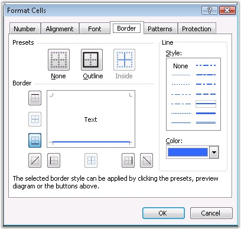
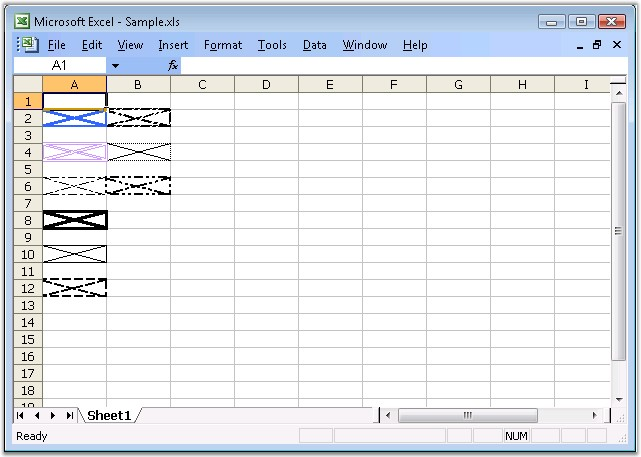

Microsoft Excel provides a default appearance for a cell background. For example, it surrounds the cell with a gray border and a white background. You can control this default appearance through the Formatting toolbar or the Border tab in the Format Cells dialog box.

Figure 40: Format cells Dialog of MS Excel - Border tab
Border Settings in XlsIO
XlsIO provides support to insert and format borders through the IBorder interface. The following code example illustrates how this can be done.
|
[C#]
// The first worksheet object in the Worksheets collection is accessed. IWorksheet sheet = workbook.Worksheets[0];
// Setting Border Line Styles. sheet.Range["A2"].CellStyle.Borders.LineStyle = ExcelLineStyle.Medium; sheet.Range["A4"].CellStyle.Borders.LineStyle = ExcelLineStyle.Double; sheet.Range["A6"].CellStyle.Borders.LineStyle = ExcelLineStyle.Dash_dot; sheet.Range["A8"].CellStyle.Borders.LineStyle = ExcelLineStyle.Thick; sheet.Range["A10"].CellStyle.Borders.LineStyle = ExcelLineStyle.Thin; sheet.Range["A12"].CellStyle.Borders.LineStyle = ExcelLineStyle.Medium_dashed; sheet.Range["B2"].CellStyle.Borders.LineStyle = ExcelLineStyle.Slanted_dash_dot; sheet.Range["B4"].CellStyle.Borders.LineStyle = ExcelLineStyle.Hair; sheet.Range["B6"].CellStyle.Borders.LineStyle = ExcelLineStyle.Medium_dash_dot_dot;
// Setting the Border Color for Cell "A2". sheet.Range["A2"].CellStyle.Borders[ExcelBordersIndex.DiagonalDown].Color = ExcelKnownColors.Blue; sheet.Range["A2"].CellStyle.Borders[ExcelBordersIndex.DiagonalUp].Color = ExcelKnownColors.Blue; sheet.Range["A2"].CellStyle.Borders[ExcelBordersIndex.EdgeBottom].Color = ExcelKnownColors.Blue; sheet.Range["A2"].CellStyle.Borders[ExcelBordersIndex.EdgeLeft].Color = ExcelKnownColors.Blue; sheet.Range["A2"].CellStyle.Borders[ExcelBordersIndex.EdgeRight].Color = ExcelKnownColors.Blue; sheet.Range["A2"].CellStyle.Borders[ExcelBordersIndex.EdgeTop].Color = ExcelKnownColors.Blue; |
|
[VB.NET]
' The first worksheet object in the worksheets collection is accessed. Dim sheet As IWorksheet = workbook.Worksheets(0)
' Setting Border Line Styles. sheet.Range("A2").CellStyle.Borders.LineStyle = ExcelLineStyle.Medium sheet.Range("A4").CellStyle.Borders.LineStyle = ExcelLineStyle.Double sheet.Range("A6").CellStyle.Borders.LineStyle = ExcelLineStyle.Dash_dot sheet.Range("A8").CellStyle.Borders.LineStyle = ExcelLineStyle.Thick sheet.Range("A10").CellStyle.Borders.LineStyle = ExcelLineStyle.Thin sheet.Range("A12").CellStyle.Borders.LineStyle = ExcelLineStyle.Medium_dashed sheet.Range("B2").CellStyle.Borders.LineStyle = ExcelLineStyle.Slanted_dash_dot sheet.Range("B4").CellStyle.Borders.LineStyle = ExcelLineStyle.Hair sheet.Range("B6").CellStyle.Borders.LineStyle = ExcelLineStyle.Medium_dash_dot_dot
' Setting the Border Color for Cell "A2". sheet.Range("A2").CellStyle.Borders(ExcelBordersIndex.DiagonalDown).Color = ExcelKnownColors.Blue sheet.Range("A2").CellStyle.Borders(ExcelBordersIndex.DiagonalUp).Color = ExcelKnownColors.Blue sheet.Range("A2").CellStyle.Borders(ExcelBordersIndex.EdgeBottom).Color = ExcelKnownColors.Blue sheet.Range("A2").CellStyle.Borders(ExcelBordersIndex.EdgeLeft).Color = ExcelKnownColors.Blue sheet.Range("A2").CellStyle.Borders(ExcelBordersIndex.EdgeRight).Color = ExcelKnownColors.Blue sheet.Range("A2").CellStyle.Borders(ExcelBordersIndex.EdgeTop).Color = ExcelKnownColors.Blue |

Figure 41: XlsIO with Border Settings
You can also set the borders for a range as follows.
|
[C#]
sheet.Range["C2"].BorderAround(); sheet.Range["C4"].BorderInside(ExcelLineStyle.Dash_dot,Color.Red); |
|
[VB.NET]
sheet.Range("C2").BorderAround() sheet.Range("C4").BorderInside(ExcelLineStyle.Dash_dot,Color.Red) |